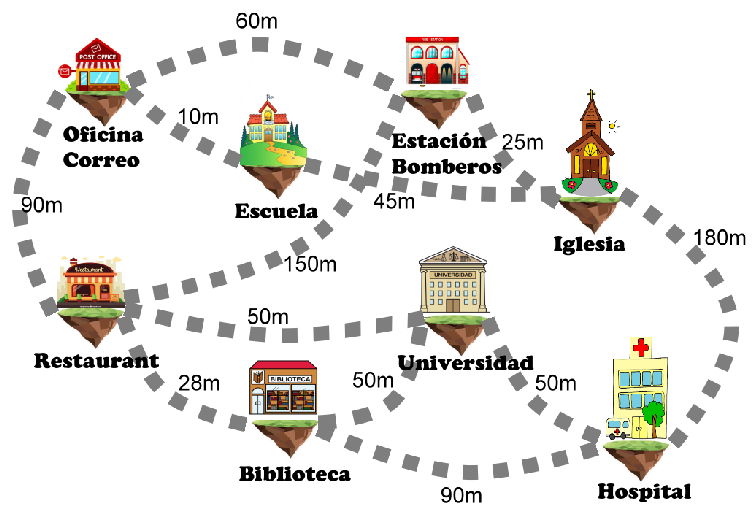

Algoritmo de Prim
Inicio
Si tuviera que conectar los siguientes edificios de la ciudad flotante GrafCity construyendo la menor cantidad de metros de puentes ...
¿Cómo haría para seleccionar qué puentes construir de entre todos los posible?

Objetivos
El objetivo es comprender el funcionamiento del algoritmo de Prim.
Conocimiento previo
Estructura de datos Grafos: definición y caracterísiticas de los grafos no dirigidos, pesados y conexos.
Árbol Abarcador Mínimo.
Autoras: Catalina Mostaccio y Gabriela Pérez